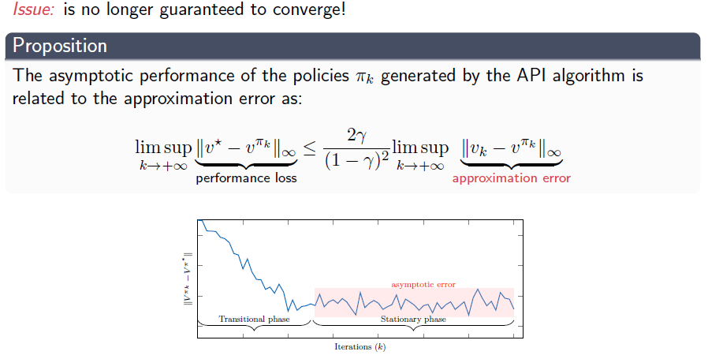

Approximate Reinforcement Learning
Odalric-Ambrym Maillard
HORIBA
June 16, 2025

Roadmap
- Regression objective and fixed point
- Explicit updates: LSTD/LSPI
- Issues with Policy Iteration
- Non-explicit updates: Gradient steps
- Policy-gradient theorem
Recap of Policy Iteration
Policy Evaluation via Regression
learned from observations \((s_i,a_i,r_i,s'_i)_{i\leq n}\).
We want
so \(\theta^\top \big(\phi(s_i,a_i)-\gamma \phi(s'_i,\pi(s'_i))\big) = r_i\).
The parameter \(\theta\) minimizing quadratic error loss on all samples is:
\(\theta_n = \Big[\sum\limits_{i=1}^n \phi(s_i,a_i)\big(\phi(s_i,a_i)-\gamma \phi(s'_i,\pi(s'_i))\big)^\top\Big]^{-1}\sum\limits_{i=1}^n\phi(s_i,a_i)r_i\)
Issues with Approximate Policy Iteration

Issues with Approximate Policy Iteration
Issues with Approximate Policy Iteration
From Policy Iteration to Policy Search
\(\pi_\theta: \cS\to\cP(\cA)\) with \(\theta\in\Real^d\)
The policy optimization problem is:
\(\max\limits_{\theta} J(\pi_\theta)\)
Gradient steps
Approximate Policy Iteration
\( \pi_{k+1}= \argmax\limits_{\pi_\theta}\, Q^{\pi_\theta}(s,\pi_\theta(s))\)
Policy gradient
\( \theta_{k+1}= \theta_k + \alpha_k \nabla J(\theta_k)\)
Policy gradient theorem
We recall that
\( J(\theta) = \Esp_{\pi_\theta}[ V^\pi] = \sum\limits_{s\in\cS} d^{\pi_\theta}(s)V^\pi(s) = \sum\limits_{s\in\cS} d^{\pi_\theta}(s)\sum\limits_{a\in\cA}Q^{\pi_\theta}(s,a)\pi_\theta(a|s)\)
with the occupancy measure
\(d^\pi(s) = (1-\gamma)\lim\limits_{T\to\infty} \sum\limits_{t=1}^T \gamma^{t-1}P_\pi^t(s|s_1)\)
Theorem: It can shown that \(\nabla J(\theta)\) is proportional to
\( \sum\limits_{s\in\cS} d^{\pi_\theta}(s)\sum\limits_{a\in\cA}Q^{\pi_\theta}(s,a)\nabla_\theta \pi_\theta(a|s) =\sum\limits_{s\in\cS} d^{\pi_\theta}(s)\sum\limits_{a\in\cA}Q^{\pi_\theta}(s,a)\pi_\theta(a|s)\frac{\nabla_\theta \pi_\theta(a|s)}{\pi_\theta(a|s)} \)
That is, \(\nabla J(\theta)\) is proportional to \(\Esp_{s\sim d^{\pi_\theta}, a\sim \pi_\theta} \bigg[Q^{\pi_\theta}(s,a) \nabla_\theta \ln \pi_\theta(a|s)\bigg]\)
REINFORCE algorithm
Update rule from empirical version of
\(\theta_{k+1} = \theta_k + \alpha \Bigg(\sum\limits_{t=1}^H (\sum\limits_{t'=t}^H r_t) \nabla \log \pi_{\theta_k}(s_t,a_t)\Bigg)\)
Q: \(\nabla\log \pi_{\theta}\) exists?